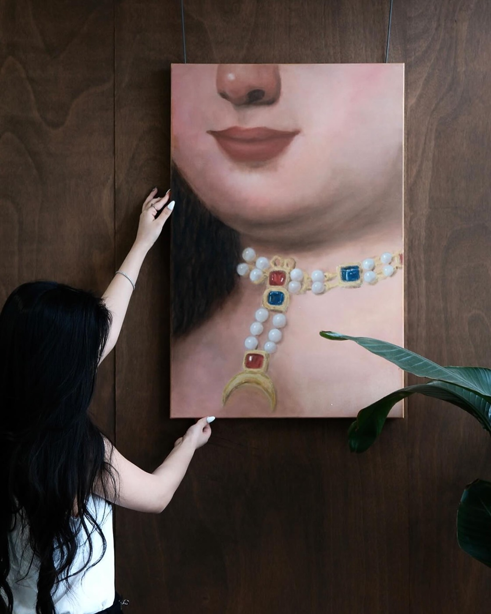
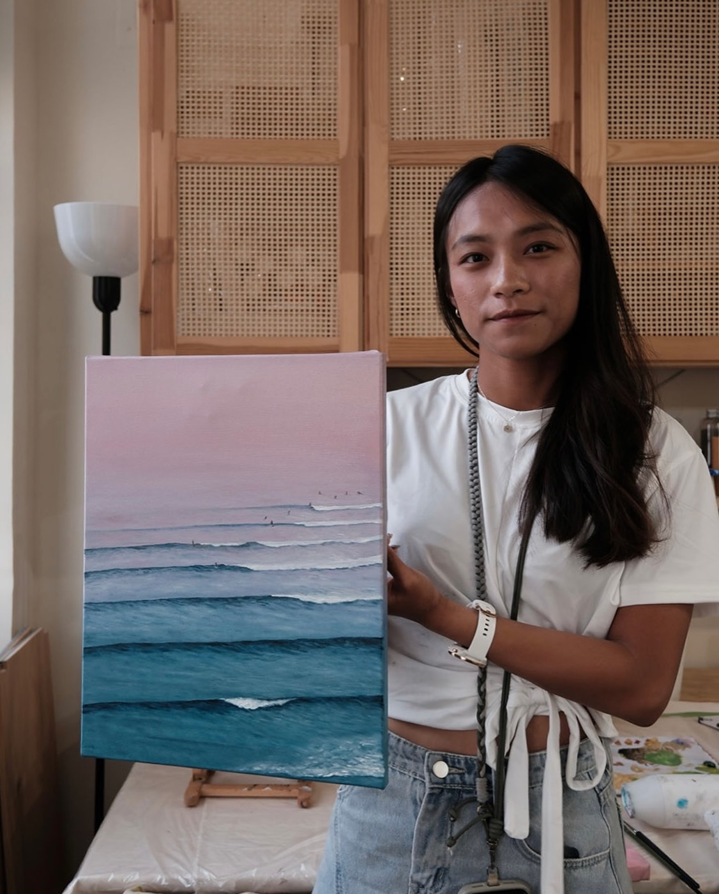
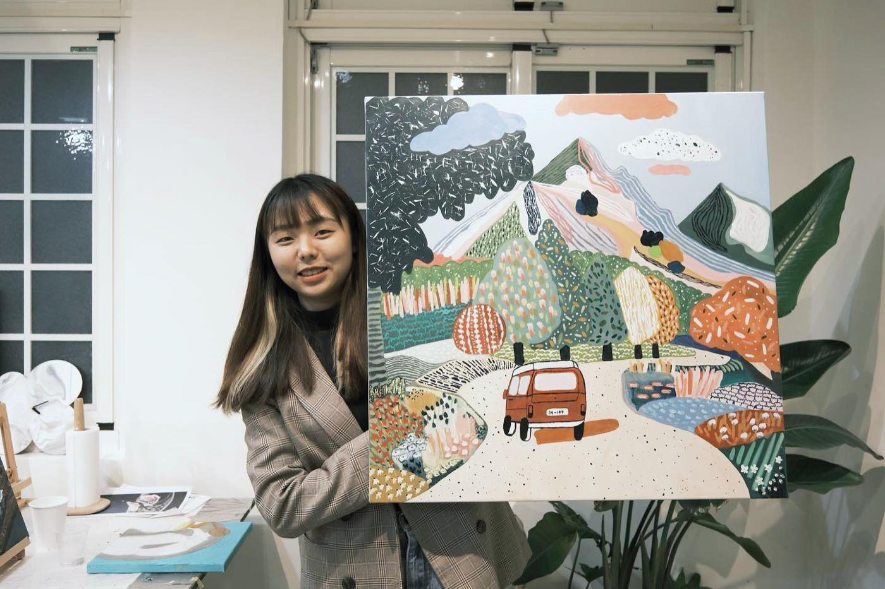
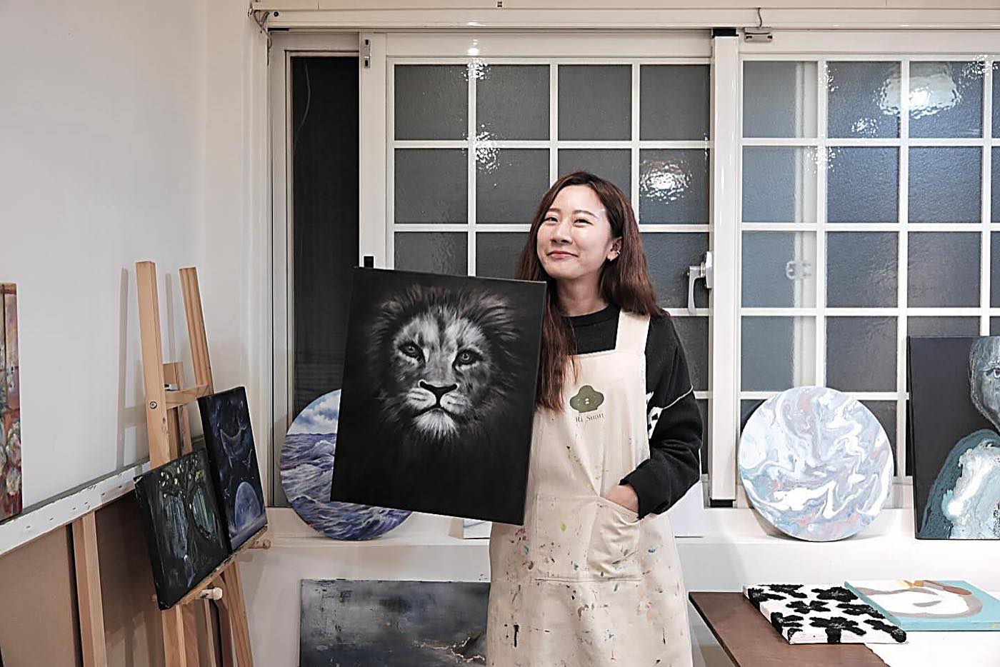
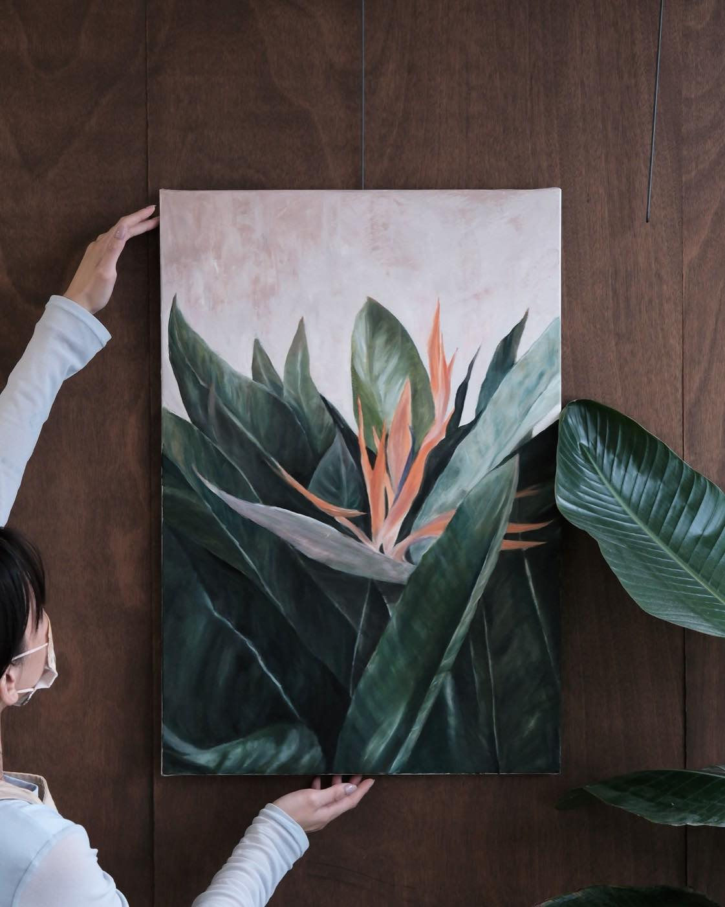

客製服務
大幅畫布訂製
不只是教畫小幅畫布，也提供客製尺寸的大幅畫布訂製服務，協助你完成一幅屬於自己的大作品。
很多同學會訂做來當喬遷禮，也有人單純想要一幅夠大的畫，放在家裡當作裝飾或背景板——想找有質感、獨一無二的大型物件當禮物或居家擺設，都歡迎找我們討論。







適合畫的風格
大幅畫布的面積大，特別適合抽象畫、肌理畫這類不需要精細構圖的畫法。
不用想太多，只要決定顏色，再決定立體位置要怎麼分佈，最後點綴一點金箔或銀箔就能完成，看似困難，但實際畫起來是很有成就感的畫面。
喜歡白色透過不同材料呈現出來的細微落差，也很推薦在留白處點綴銀箔，低調又耐看，是很受歡迎的入厝贈禮色系。
如果想用刮刀堆疊出更明顯的立體筆觸，可以參考「石英砂肌理畫」跟「刮刀油畫」這兩堂課的做法，技法都可以套用在大尺寸的畫布上。
想要畫面更細緻、精準控制漸層的話，也接「自己帶圖創作」那種油畫＋筆刷的做法，一樣能套用在大尺寸的畫布上。三種做法實際呈現的差異，可以參考材料指南的「大幅畫布訂製，三種材料的呈現」。
完成時間怎麼安排
大部分同學不清楚不同材料的乾燥時間跟完成進度，所以會由我們依照你提供的圖片、尺寸，推薦適合的材料，並評估大概能不能一堂課完成。
石英砂肌理（左）用的是全水性、乾燥速度快的材料，過程中可以不斷堆疊、修改，吹一吹很快就能再疊加一層，通常可以在同一堂課的尾聲貼上金箔或銀箔，當天就把整幅畫完成。
油畫類（右）乾燥較慢，沒辦法當天貼箔完成，實際要上幾堂課、畫布怎麼安排晾乾，會依圖案複雜度與尺寸評估，不是固定規則。
如果一堂課沒有畫完，可以選擇當天加時間繼續完成，或是另外約一天加堂完成，實際怎麼安排會在討論過程中跟你確認。
完成的樣子
同樣是石英砂材質的大幅畫布，換一種配色，完成的氣氛就完全不一樣。
灰色系＋金箔
粉彩色系＋金箔
訂製怎麼進行
大幅畫布比小幅畫作複雜，圖片跟材料選得不一樣，完成時間跟費用都會有落差，建議先私訊討論再預約，不要直接訂位。
私訊時提供想要的尺寸、想畫的圖片，以及預計完成時間（有期限或不急都可以），我們會依照這些資訊評估合適的材料、尺寸，並協助報價。
尺寸可以客製到個位數公分，不限制固定規格。畫布需要提前至少 7 天確認畫室是否有現貨，所以想訂製的話建議提早聯絡。
費用是單堂課的基礎價格，加上畫布加大與材料的費用，實際金額會依尺寸大小、圖案複雜度而不同，詳細報價歡迎私訊詳洽。
適合誰來訂製
想送喬遷禮又希望有質感、獨一無二的人，很適合訂一幅客製大畫布。
也適合單純想在家裡放一幅夠大的畫，當作牆面裝飾或拍照背景板的人。
完成作品
同樣是大幅畫布，每個人選的顏色跟金屬箔點綴的位置都不一樣，掛在家裡都會是獨一無二的一幅畫。
學員作品陸續整理中，敬請期待。
查看更多這堂課的作品 →常見問題
可以自己決定尺寸嗎？
可以，而且能客製到個位數公分，不限制固定規格。直接提供想要的尺寸，以及想繪製的圖案或風格，我們協助報價，畫布需要提前至少 7 天確認畫室是否有現貨。
費用怎麼算？
費用是單堂課的基礎價格，加上畫布加大與材料的費用，會依畫布尺寸大小、圖案複雜度而不同，詳細報價歡迎私訊詳洽。
要先預約還是先討論？
建議先私訊討論再預約。大幅畫布比較複雜，圖片跟材料選得不一樣，完成時間跟費用都會有落差，先提供尺寸、圖片跟預計完成時間，我們評估過才能確定怎麼安排。
大幅畫布適合畫什麼風格？
特別適合抽象畫、肌理畫這類不需要精細構圖的畫法，只要決定顏色跟立體位置的分佈，最後可以搭配金箔或銀箔點綴收尾。
完全沒畫過這麼大的畫布，會很難掌握嗎？
大面積塗刷不用想太多構圖，看似困難但實際上手感很好，過程中我們會協助掌握顏色跟立體位置的分佈，也可以隨時討論調整。
當天可以直接把整幅畫完成嗎？
看選用的材料。石英砂肌理是全水性、乾燥速度快的材料，過程中可以不斷堆疊修改，通常可以在同一堂課的尾聲貼上金箔銀箔，當天完成整幅作品；油畫類乾燥較慢，沒辦法當天貼箔完成，實際堂數會依圖案複雜度評估。如果一堂沒畫完，可以當天加時間完成，或另約一天加堂完成。